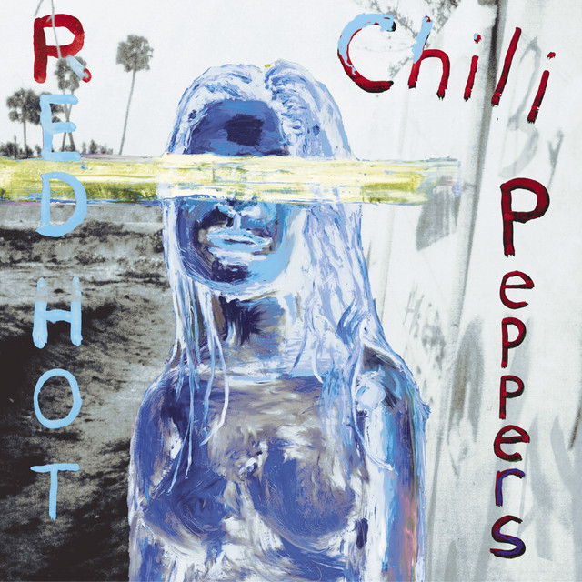

Punk rock
Punk rock is always thought of as a blend of garage rock and conventional rock 'n' roll. It presented a newly-born alternative to the traditional rock 'n' roll music of the 70s. The subgenre includes elements like power chords, extreme vocals, distorted guitars, and fast tempos. The lyrics of punk rock songs often revolve around social discontent and alienation.
A few of the most famous punk rock groups include Sex Pistols, The Clash, and Green Day.

Art rock
With an artistic vibe, the sound of art rock is super experimental, be it in the time signatures or the rhythms. This avant-garde style of rock music got notable recognition in the 1960s in the United States and the United Kingdom.
Pieces of art rock music are intended to be listened to while relaxing at home, instead of dancing to it. A few names that pioneered the art rock subgenre include Frank Zappa's Mothers of Invention, The Pretty Things, Pink Floyd, and Procol Harum.
Alternative rock
Alternative rock is defined by edgy lyrics and experimental use of instrumentation. However, the subgenre remains loosely defined, to the point that it's used to refer to any music that sounds “similar to rock 'n' roll”.
Some of the most popular alternative rock bands include Nirvana, Red Hot Chili Peppers, and Sonic Youth.
Blues rock
As its name implies, blues rock is a combination of blues and rock music. Blues rock pieces typically have a loud beat, aggressive texture, heavy guitar sounds, and blues-scale guitar solos.
Blues rock came to life in the early to mid-1960s, specifically in the United States and the United Kingdom. Bands like Led Zeppelin, ZZ Top, and The Allman Brothers Band were among the earliest bands to adopt this style of rock music
Indie rock
Indie rock is all about using simple instruments and a clear melody. This type of rock music emerged in the 70s-80s period in the United Kingdom and the United States. The whole point of indie rock was to combat the heavy commercialism of rock music.
Some of the most popular indie rock bands include Arctic Monkeys, Yeah Yeah Yeahs, Kaiser Chiefs, and The Killers.

Psychedelic rock
Psychedelic rock is heavily influenced by psychedelic culture. Bands that play this style of rock music rely on trippy studio effects, including reverb, distortion, reversed sound, and phasing to give the subgenre a distinct nature. This is usually in combination with the original use of instruments such as wah-wah pedals and electric guitars with feedback.
Bands like The 13th Floor Elevators, Jefferson Airplane, and The Flaming Lips are often regarded as the pioneers of psychedelic rock.
Electronic rock
Electronic rock is a fusion genre that combines elements of electronic and rock music. The subgenre is known for its integration of electronic instruments and beats into rock music. It often takes inspiration from other genres like hip hop, synth-pop, and techno.
This style of music got popular in the late 1960s, with characteristics like upbeat vocals, mellotrons, synths, and tape techniques. Some of the most popular electronic rock bands encompass Depeche Mode, Ratatat, Linkin Park, and Celldweller.
Glam rock
Popularized in the 1970s in the United Kingdom, glam rock was one of the most iconic cultural phenomena at that time. This style of rock music is greatly influenced by bubblegum pop. Glam rock bands usually put on wild wigs and wear unconventional costumes.
The subgenre prioritizes catchy melodies, stomping hip-shaking rhythms, and extreme theatricality. Some notable glam rock bands include Slade, T. Rex, New York Dolls, and Sweet.